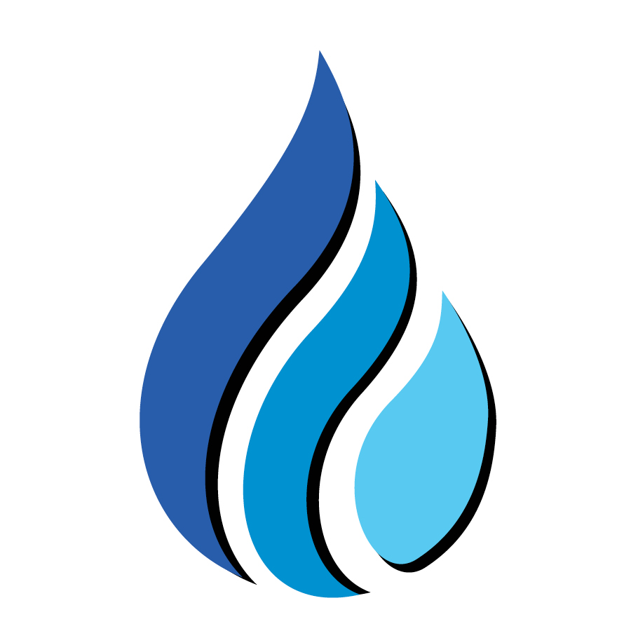

PURE WAYSin desmineralizar tu agua, a diferencia de la ósmosis inversa.
La sequía del Río Colorado ya obligó a reducir formalmente cuánta agua recibe Baja California — está documentado en acuerdos oficiales entre México y Estados Unidos (Actas 323 y 330). Además, cada garrafón de ósmosis inversa desperdicia entre 2 y 5 litros de agua en el proceso de purificación.
Elimina cloro, metales pesados y compuestos orgánicos — conservando los minerales que tu cuerpo necesita.
Ambas tienen minerales disueltos (TDS) — y eso no es un defecto, es lo que hace agua de verdad. El medidor de TDS mide minerales, no contaminación: no distingue entre calcio saludable y un químico tóxico. Pure Way conserva esos minerales; la ósmosis inversa los elimina.
Tecnología desarrollada por Owen Boyd — casi 4 décadas en tratamiento de agua, testimonio ante el Congreso de EE.UU. y reconocimiento de la EPA. Componentes certificados bajo estándares NSF/ANSI.
Sin costo, sin compromiso. Revisamos tu agua y te decimos qué sistema se adecúa a tu casa o negocio.